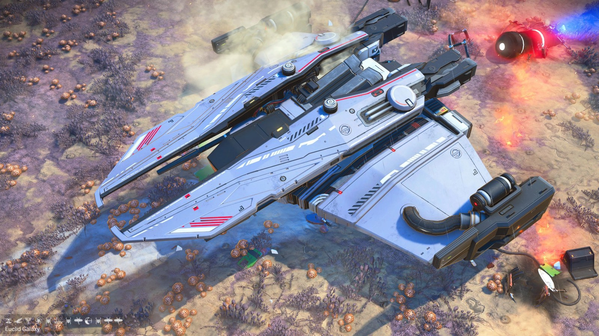
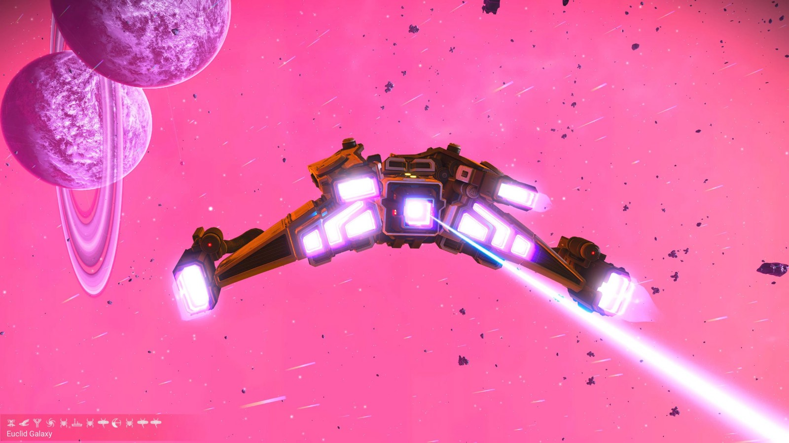
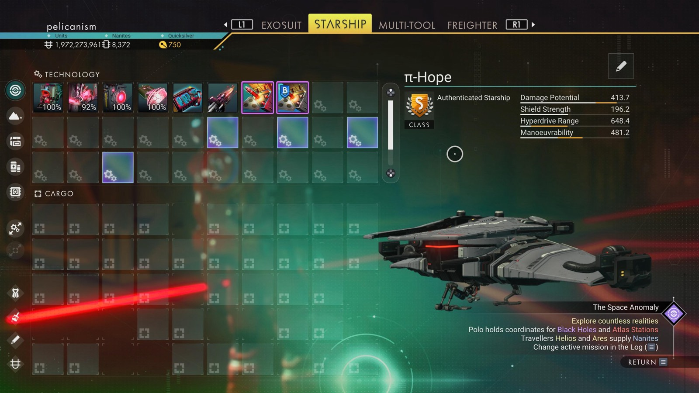

Waypoint 33
Tuyrnyan



- Portal glyphs
- 21E976784788
- Face · Bird · Tree · Galaxy · Bug · Boat · Bug · Dragonfly · Eclipse · Bug · Dragonfly · Dragonfly
- Distance from core
- 1,090,677 LY
- Jump from previous
- 1,816 LY
- Planet coordinates
- +0.96, +131.90
- Ship as found
- C-class, 38+27 slots
- S-class ship
- π-Hope
- Damage
- 413.7
- Shield
- 196.2
- Hyperdrive
- 648.4
- Manoeuvrability
- 481.2